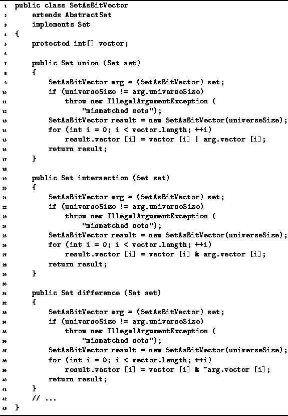
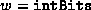
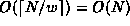
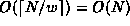

Data Structures and Algorithms
with Object-Oriented Design Patterns in Java
Data Structures and Algorithms
with Object-Oriented Design Patterns in Java
The implementations of the union, intersection, and difference methods
for operands of type SetAsBitVector
are shown in Program  .
The code is quite similar to that for the SetAsArray class
given in Program .
.
The code is quite similar to that for the SetAsArray class
given in Program .

Program: SetAsBitVector class union, intersection and difference methods.
Instead of using the boolean operators
&&, ||, and !,
we have used the bitwise operators
&, |, and .
By using the bitwise operators,
 bits of the result are computed
in each iteration of the loop.
Therefore, the number of iterations
required is  instead of N.
The worst-case running time of each of these operations
is .
instead of N.
The worst-case running time of each of these operations
is .
Notice that the asymptotic performance of these SetAsBitVector class operations is the same as the asymptotic performance of the SetAsArray class operations. That is, both of them are O(N). Nevertheless, the SetAsBitVector class operations are faster. In fact, the bit-vector approach is asymptotically faster than the the array approach by the factor w.
 Copyright © 1998 by Bruno R. Preiss, P.Eng. All rights reserved.
Copyright © 1998 by Bruno R. Preiss, P.Eng. All rights reserved.